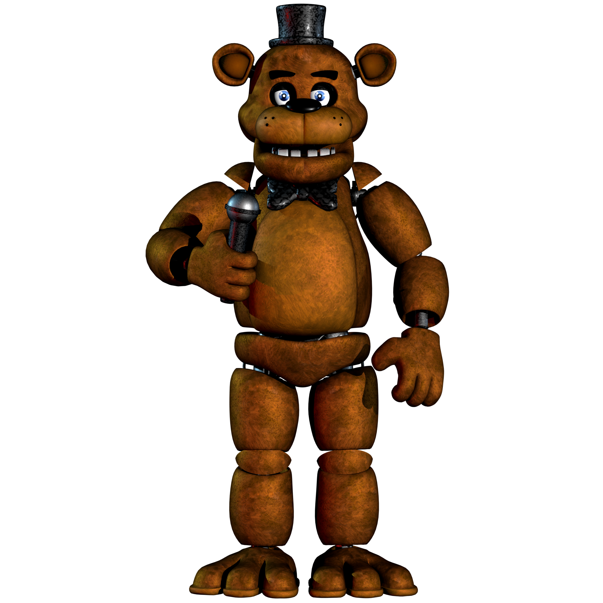
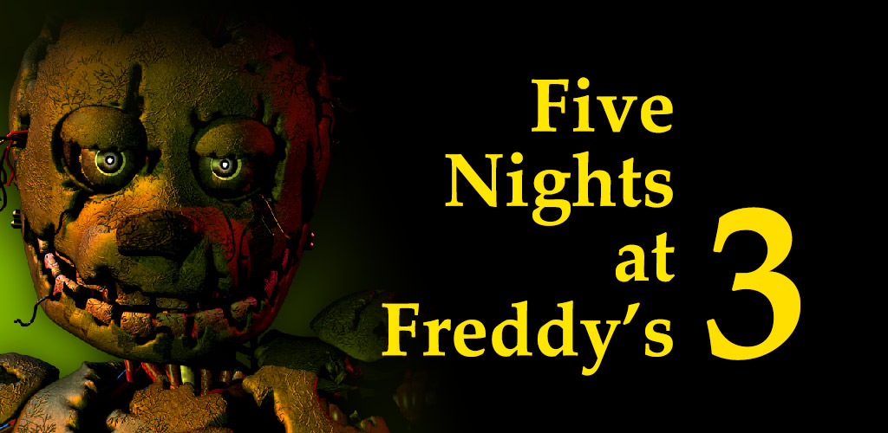

Introducción
Five Nights at Freddy's es una famosa saga de videojuegos creado por Scott Cawthon. La historia trata sobre una pizzería donde por la noche los animatrónicos cobran vida. Eres el guardia de esa pizzería y tienes que tratar de sobrevivir la noche evitando ser atrapado por estos animatrónicos.
Personajes

Freddy Fazbear es el principal antagonista de la saga, un animatrónico en forma de amigable oso.

Bonnie es el conejo guitarrista de esta terrorífica banda de animatrónicos.

Chica es la pianista del grupo, la cual también trae consigo un extraño cupcake.

Foxy el pirata, el "showman", con unas piernas muy rápidas.
Galería




Ambientado en el ficticio restaurante de Freddy Fazbear's Pizza. El juego se centra en un guardia de seguridad nocturno defendiéndose del constante ataque de los defectuosos personajes animatrónicos del establecimiento, rastreando sus movimientos a través del edificio utilizando un sistema de cámaras de seguridad.
Todo comienza en 1987 (6 años antes del primer juego) donde Jeremy Fitzgerald acaba de comenzar a trabajar como guardia de seguridad de vigilancia nocturna en el restaurante familiar de Freddy Fazbear's Pizza. Cada noche, el tipo del teléfono deja un mensaje de voz por teléfono para explicarle tanto sus funciones como partes de la historia de fondo que rodea el restaurante, revelando que los modernizados personajes animatrónicos del establecimiento poseen un software de reconocimiento facial y acceso a una base de datos criminal para proteger a los niños de posibles daños.
30 años después del cierre del primer Freddy Fazbear Pizza de 1985, en 2015, un empleado recién contratado es asignado como guardia de seguridad de vigilancia nocturna en Fazbear's Fright, una atracción con temática de terror basada en los misterios sin resolver del desaparecido restaurante familiar de Freddy Fazbear's Pizza, construida en el interior de un parque de atracciones local con parafernalia rescatada de los establecimientos originales. Durante la semana antes de que la atracción sea abierta al público, el empleado debe vigilar el edificio desde su oficina, utilizando una red de cámaras de seguridad instaladas en las habitaciones y los conductos de ventilación. Además, debe controlar el estado de tres sistemas operativos: cámaras, audio y ventilación, reiniciándolos cada vez que comiencen a fallar; asimismo, podrá ver fantasmas de animatrónicos de las anteriores entregas, pudiendo causar un mal funcionamiento de los sistemas, pero actuando sin hostilidad contra él.
En la historia de FNAF 4, William Afton se encargaba de secuestrar a niños y meterlos en un “experimento”, uno que consistía en llevar a niños a un complejo falso (en este caso una mansión), y someter a los individuos a un experimento para medir el miedo del ser humano.